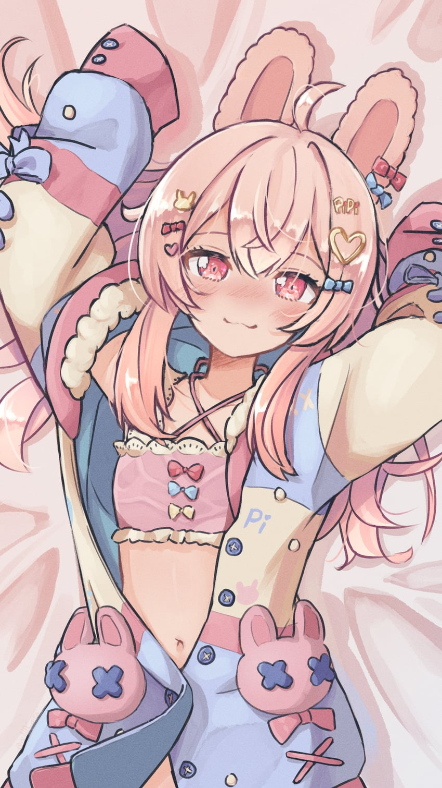
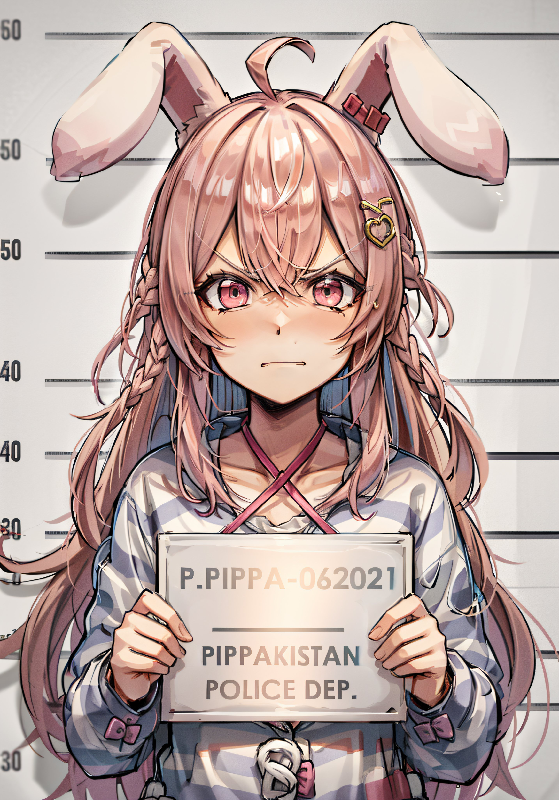
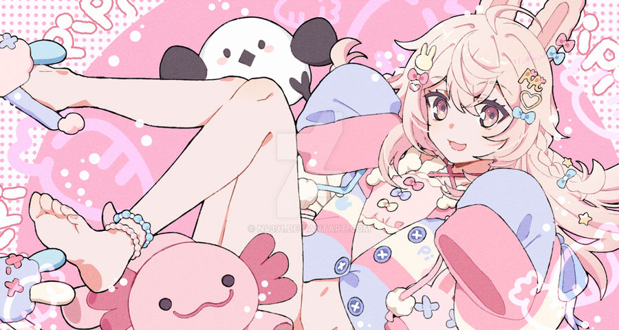

Pipkin Pippa Pippa Pipkin is a female English Virtual YouTuber and a member of Phase-Connect debuting as part of its First Generation alongside Rinkou Ashelia, Hakushika Iori, Tenma Maemi, Fujikura Uruka, Shisui Michiru and Utatane Nasa.
Official Background Pippa is a kind streamer who holds high passion for the art of Vtubing. She streamed and published many videos talking about various subjects concerning about the community, or in order to give advice to anyone wanting to evolve as a VTuber. She loves Vtuber culture, but still, she is defined her honesty and sincerity, and thus also not afraid to point out its flaws and deficiencies. She is usually speaking with a sweet tone. However, she may swear even in the middle of a common phrase. Moreover, when she gets angry or excited, Pippa always quickly starts to swear more than usual while speaking with a quaky loud voice. She seems to be paranoid, and is often seen as a conspiracy theorist who believes that some mass shootings are false flags caused by the United States government as a pretense to repeal the Second Amendment so that it's citizens are easier to oppress. She has a bias against city-dwellers, and holds a strong preference for country life. She is often considered Sakana's biggest headache with her antics and subversive content, often talking about the darker parts of the internet. She constantly pushes the boundaries set by management, and enjoys trolling and messing with people, but in turn they also enjoy trolling and messing with her. Despite all her edginess, however, behind the scenes Pippa is actually an intelligent, thoughtful and empathic soul. She is well known for roasting her peers, her company, her own fanbase and anything else she feels like, but behind the scenes she genuinely wants to express support for them. Her tangents and zatsudans can get profound, delving into various topics like philosophy and dealing with psychological problems. In her original song, she herself admitted that she used to want to become somebody awesome in this world, but her fate went wrong. However, it was in Vtubing wherein she found a space where she can belong, to express her own identity and talents. She is a cynic, yes, but she climbed out of it, and now she developed into a more assertive, confident and friendly personality using her experience to help others. Pippa, as well as her Capippalist followers,do not shy away from adversity, ostracism, and controversy. Thus they have adopted this phrase as their motto: I am Cringe, but I am Free   